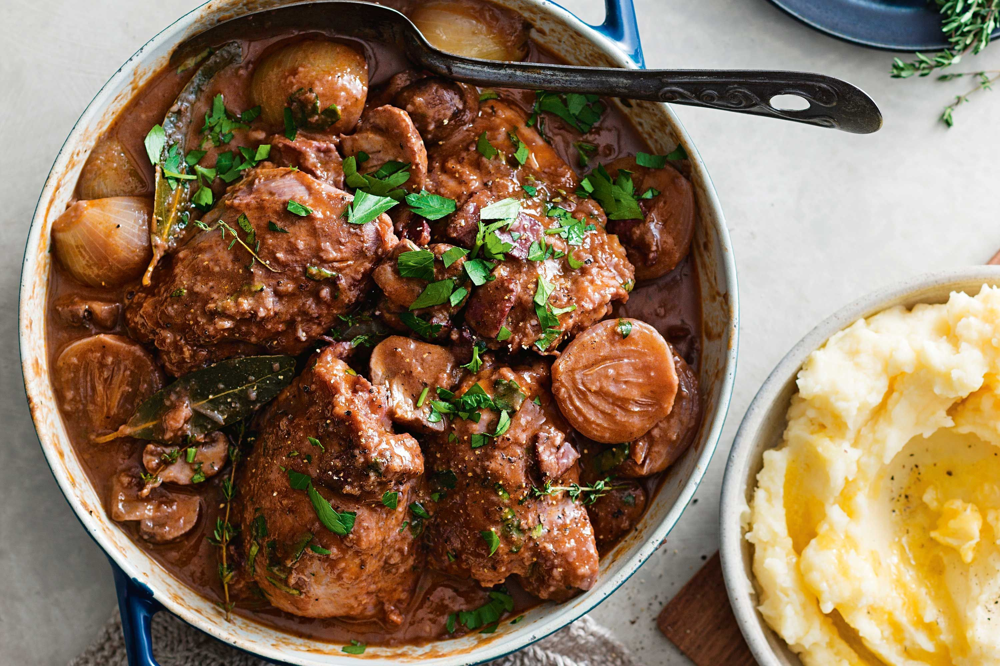
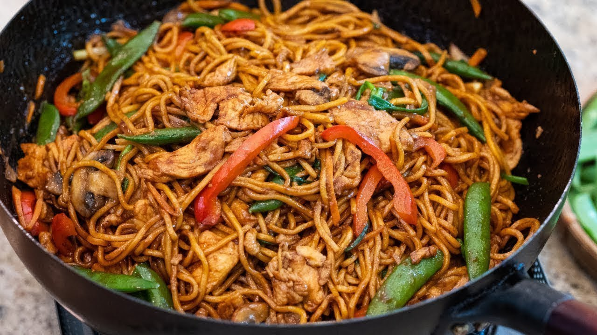
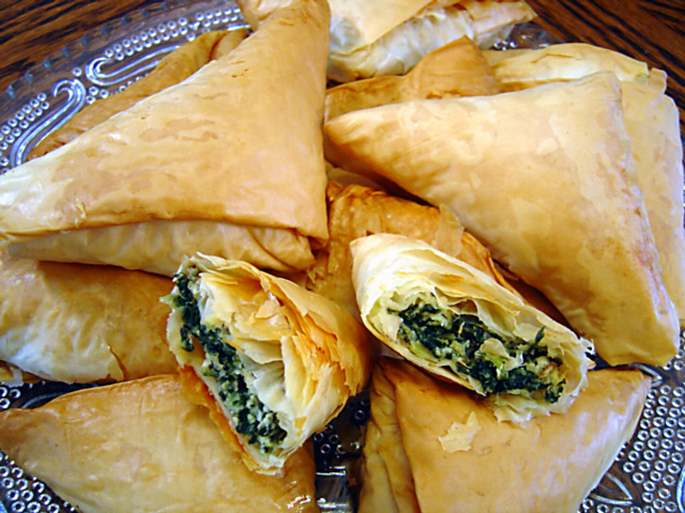
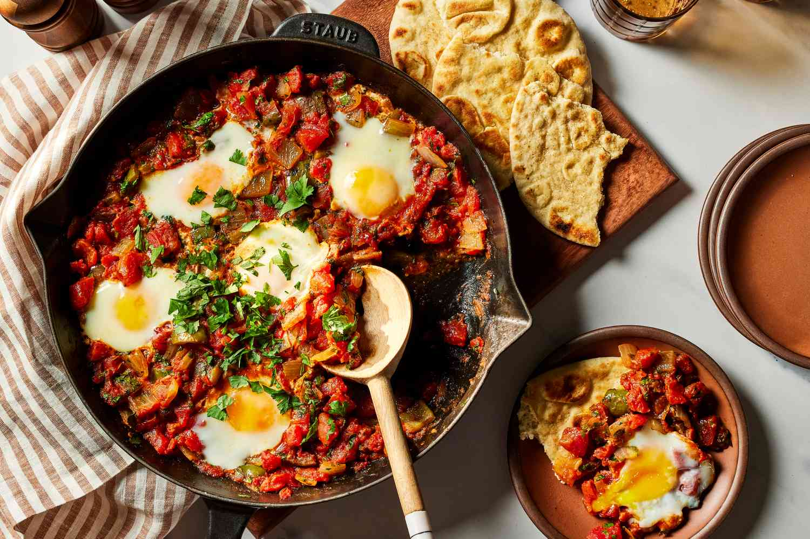
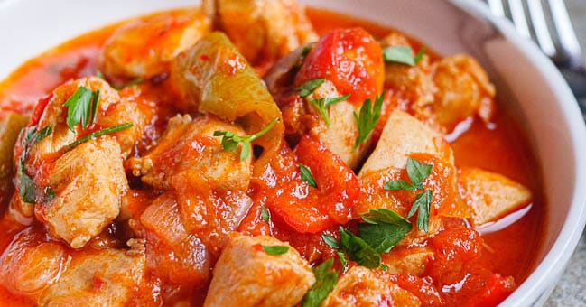
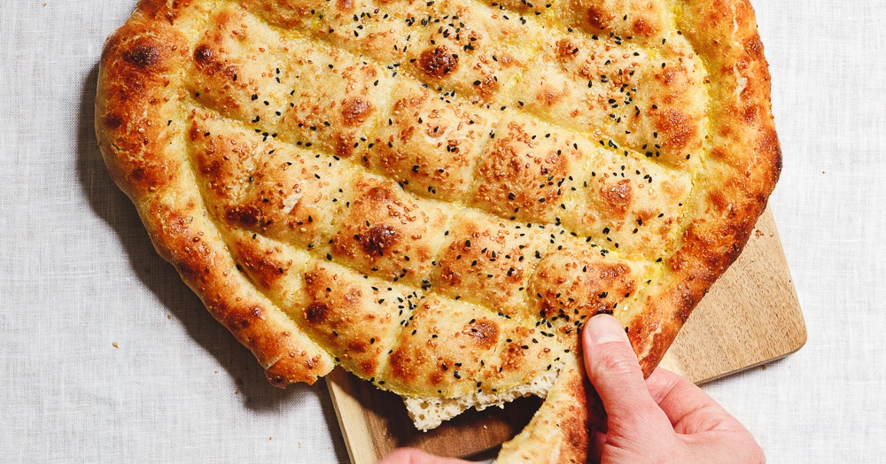

Fransk løksuppeEn klassissk fransk løksuppe er laget av enkle ingredienser, men smaker vidunderlig. Vær tålmodig og la løken steke seg ordentlig gyllenbrun, så er belønningen en helt nydelig suppe! LES MER |

Pasta carbonaraPasta carbonara er en italiensk klassiker, og en favoritt-pasta for mange nordmenn. I klassisk carbonara brukes guanciale - speket svinekjake og pecorino-ost, men vi jukser ofte og lager den med bacon og parmesan. Husk å salte pastavannet! LES MER |

Coq au vinCoq au vin er en usedvanlig smakfull gryterett med opphav fra Burgund i Frankrike. Vi har valgt å bytte ut hanekjøttet med kylling, siden det er langt enklere å få tak i her i butikkene. LES MER |

Chicken lo meinKylling Lo Mein er en populær kinesisk rett som er kjent for sin smakfulle kombinasjon av nudler, sautert kylling og sprø grønnsaker. Denne enkle oppskriften tar deg gjennom trinnene for å lage en deilig Kylling Lo Mein hjemme. LES MER |
|

SpanakopitaSpanakopita er en gresk pai som er laget med flere lag filodeig, fylt eller innbakt med spinat og kremet fetaost. LES MER |

ShakshukaShakshuka er en rett der egg posjeres i en deilig tomatsaus. Dette er en sunn middagsrett, som også kan spises som en deilig lunsj eller en helgefrokost. LES MER |

Tyrkisk kyllinggryteEnkel og rask hverdagsmat av beste tyrkiske merke. Kyllinggryte med paprika og tomatsaus er en ordentlig vinner i hverdagen! LES MER |

RamadanbrødJeg kan tenke meg få ting som er bedre enn et rykende ferskt tyrkisk brytebrød. Tyrkerne spiser det stort sett bare i fastemåneden, men er verdt å lage uansett hvilken dato kalenderen viser. Enkelt er det også! LES MER |